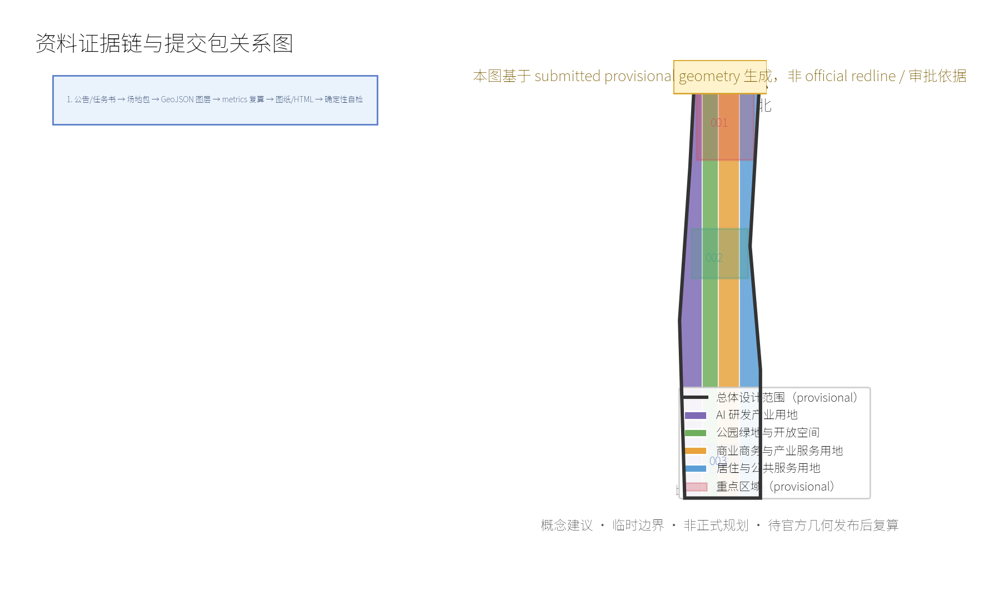
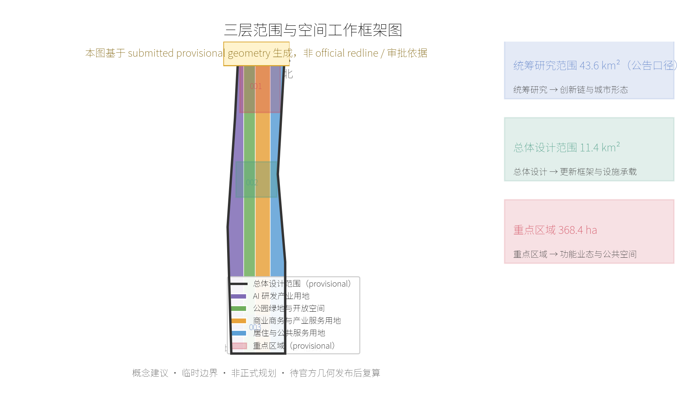
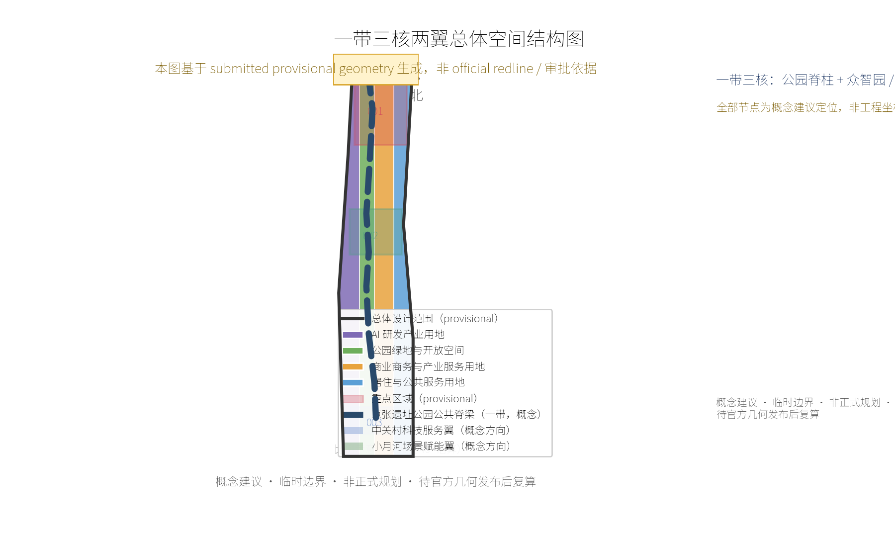
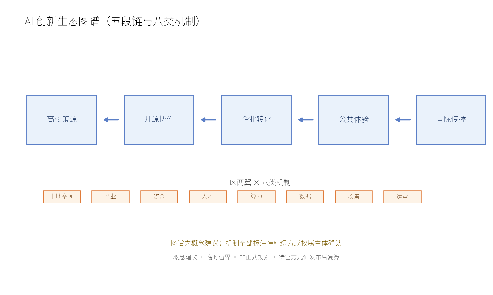
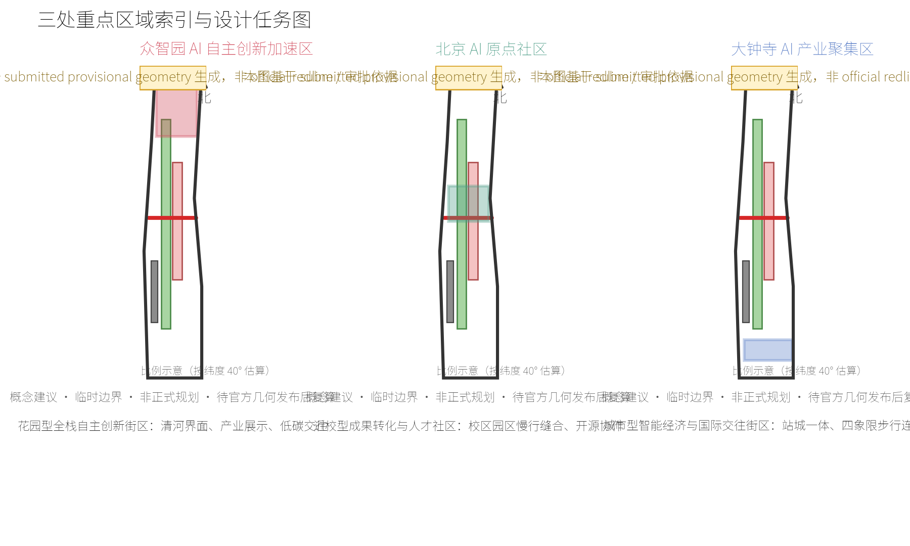
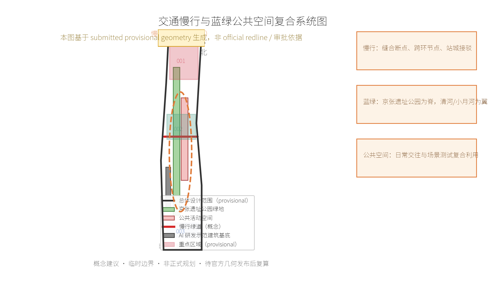
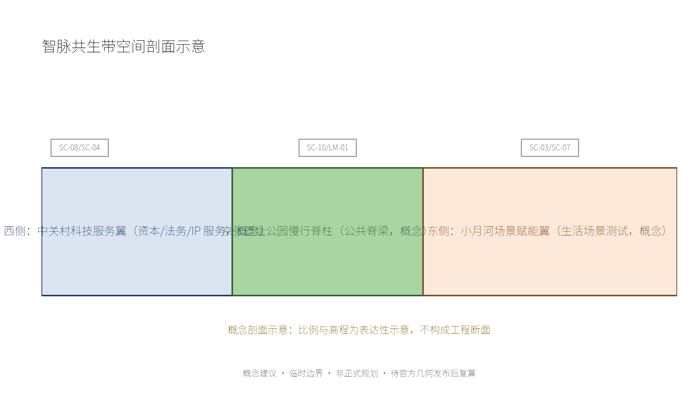
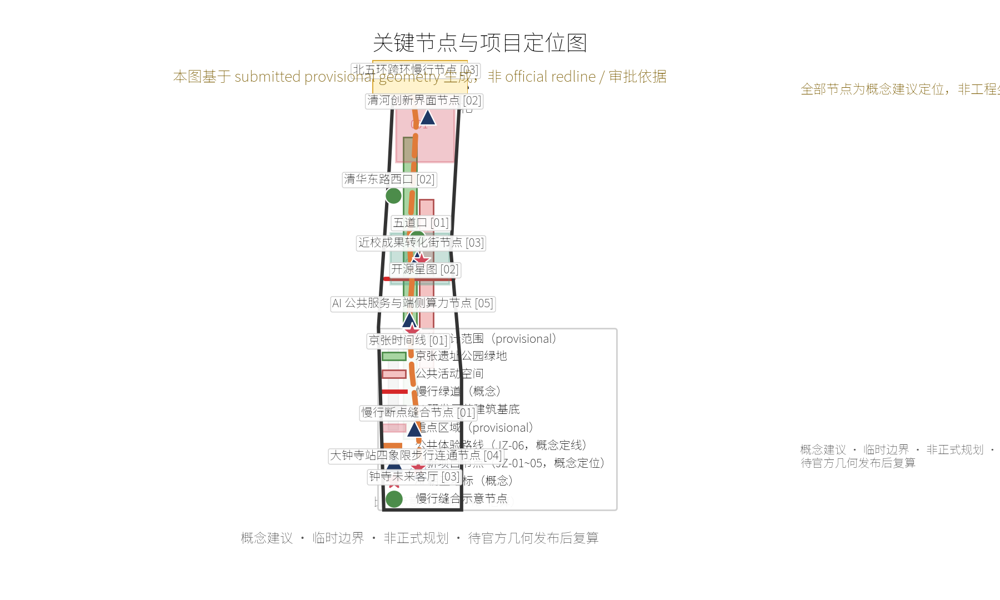
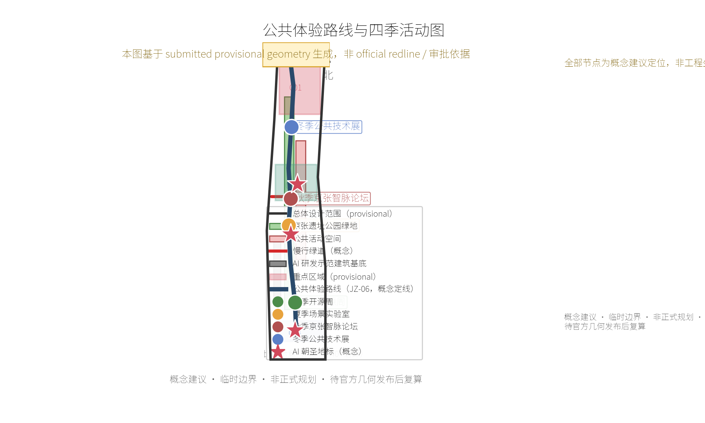
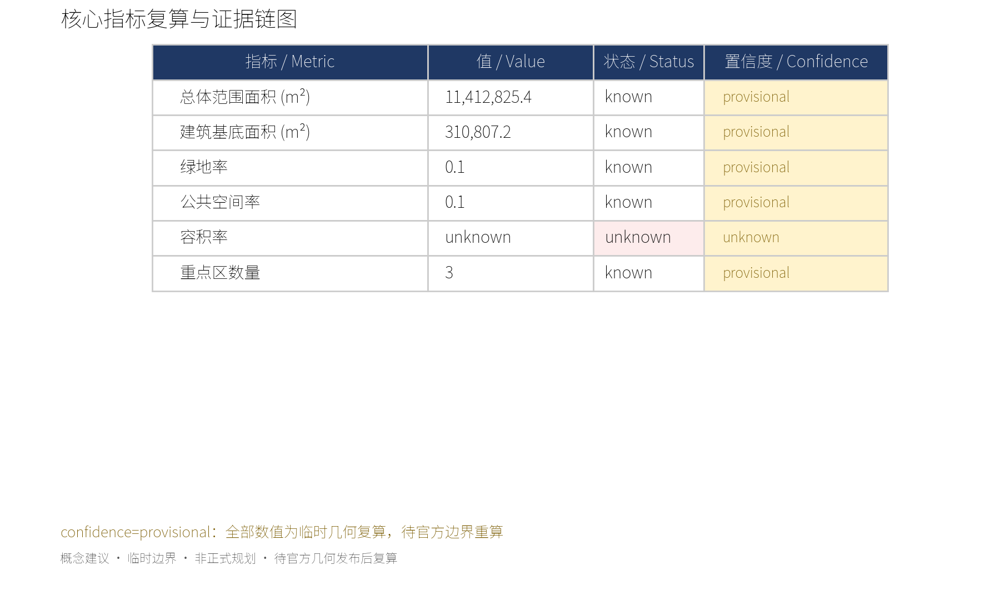

京张智脉：面向日常的 AI 创新公地
基于 provisional boundary 和结构化自检要求生成的 formal AI 城市设计方案包；保留精度警示和复算要求，但组织方数据缺口不阻断内容评分。
<!-- Participant design package generated by Codex for lizhousheng; all spatial moves remain conceptual and provisional-boundary constrained. -->
京张智脉：面向日常的 AI 创新公地
版本说明：V1.0 将公共可达、可解释和可复核作为后续专业深化的共同底线。
方案摘要：从创新园区到创新公地
京张智脉（Jing-Zhang Intelligence Spine）把“百年京张文化带、都市 AI 生活体验带、AI 融合创新带”组织为一条可步行、可学习、可发布、可被居民共同使用的创新公地。它不是增加新的法定边界，而是以京张遗址公园为公共脊梁，将众智园的全栈创新、AI 原点社区的近校转化、大钟寺的国际会客厅，连同中关村科技服务翼与小月河场景赋能翼，编织为三区两翼的协作回路。视觉识别建议以“并行双线 + 开放节点”为母题：两条线对应京张铁路与知识流，节点对应可被公众看见并参与的 AI 成果。
本方案的核心承诺是“先把人和公共利益放进 AI 城市”。10 张场景卡覆盖慢行导航、无障碍协助、开源发布、就业与创业服务、低碳运维、公共学习、文化解说、健康运动、消费辅助和活动安全；所有场景均采用数据最小化、显著告知、人工复核、可退出和非歧视原则。三项产业测试验证建议为安全治理沙盒、端侧算力-低碳协同、站城智能体服务；它们均需取得专业、安全、数据与运营授权后再由专业团队深化。
三处 AI 朝圣地标建议是“京张时间线”（遗址公园的开放文化展廊）、“开源星图”（AI 原点可持续贡献墙）和“钟寺未来客厅”（大钟寺站城可变发布界面）。它们不依赖个人生物识别或企业商标，采用可替换、可维护的公共展示组件。年度运营建议形成“春季开源周、夏季场景实验室、秋季京张智脉论坛、冬季公共技术展”的循环，以开发者贡献、居民反馈、专业审核和公开复盘连接国际传播与本地受益。
设计依据与资料清单
本 formal 方案以北京市规划和自然资源委员会海淀分局发布的《百年京张AI创新带城市设计国际方案征集资格预审公告》为第一依据，并以 brief/site-package/ 中经维护者登记的临时粗略边界、重点区域、枚举、指标和来源清单为机器可读依据。AI agent 在生成方案前必须读取 design_brief.json、allowed_design_space.json、sources.json、enums/、ranges/、schemas/、data/source_registry.json 和 data/processed/agent_fact_pack.md，并用 project_scope_summary.csv、agent_task_requirements.csv、source_use_matrix.csv、missing_data_checklist.csv 建立任务、范围、资料用途和缺口清单。所有设计判断都要拆分为可追溯来源、可复算指标、可校验图层和可人工复核假设。公告要求方案达到控制性详细规划的城市设计深度和规划综合实施方案的城市设计深度，因此文本叙述不能替代 GeoJSON、指标表、A3 文册、A0 展板和 HTML 电子展示成果。
方案不是独立愿景文本，而是从公告、面向智能体任务书和场地资料出发组织成果；本节只把最关键依据放在判断旁边 来源 来源 深度。完整来源和标准覆盖分别保存在 sources.json、standard_matrix.json 与 design_depth_matrix.json，不在正文重复机器索引。
资料登记表的使用边界如下 来源：
- data/source_registry.json 登记公开、清权与临时资料的用途边界。
- 当前登记摘要：formal 可用资料 7 条，背景资料 1 条，provisional-only 资料 1 条。
- agent 不得把 background_only 或 provisional_only 资料升级为 official boundary、法定控规、正式评分依据或政府实施承诺。
data/processed/agent_fact_pack.md 是本方案的阅读导航层，不是新的权威来源 来源。它帮助 agent 把三层范围、三处重点区、公告任务、agent.1-agent.6、资料可用性和缺资料事项组织成可读方案；事实判断仍需回到已登记的原始材料 来源 来源，完整来源关系由 sources.json 保存。

本脚手架在官方 SITE_BOUNDARY 或三处 KEY_AREA 尚未取得时，使用 brief/site-package/geometry/provisional_boundaries.geojson 生成临时 formal 包。提交包中的 geometry/site_boundary.geojson 与 geometry/key_areas.geojson 均必须标注为 provisional_constraint、official_boundary=false，只能用于方案生成、自检、可视化和设计讨论，不能作为 official redline、审批依据、精确面积依据或法定控制结论。该组织方数据缺口本身不阻断内容评分；替换 official polygons 后，site boundary、key areas、land use、roads、green space、public space、buildings、phasing 和 metrics 均需重算。
本次脚手架生成的可评分状态为：临时边界，保留精度警示并待正式数据发布后复算；不阻断内容评分。因此，正文中的空间结构、场景、项目和指标均按“可讨论、可复核、可替换官方边界后重算”的原则写入；当官方边界和重点区 polygon 更新后，agent 必须重新运行脚手架、自检和图纸/HTML生成，不能只替换单个文件。
边界解释可回到总体范围图层和面积复算 空间数据 指标。三处重点区则由独立图层和数量指标核对 空间数据 指标。这意味着读者可以从正文进入证据，但不必先读一串机器编号。
三层范围工作框架
方案按照公告确定的三个层次组织工作：统筹研究范围关注 43.6 平方公里的AI产业生态、战略定位、创新链和未来城市形态；总体设计范围关注 11.4 平方公里京张遗址公园周边 1-2 公里城市地区和产业区，要求形成城市更新总体框架、产业空间布局、交通市政支撑和城市风貌控制；重点区域范围关注 368.4 公顷三处详细设计地区，要求明确功能业态、建筑规模、拆改留分类、公共空间连通和交通组织。三层范围在 compliance_matrix.json 中逐条映射，保证公告 1.3、1.4、1.5 与 agent.1-agent.6 的必选任务都有章节、图层、指标、图纸和 HTML 证据。注意口径区分：43.6 / 11.4 / 368.4 为公告口径数值；metrics.json 中 site_area_sqm=11,412,825 m² 等数值是基于 submitted provisional geometry 的临时复算结果，两者不得混用，正式几何发布后统一复算。
三层工作框架的深度项由 深度 和 深度 约束，空间证据以 空间数据 与 空间数据 为准，任务依据以 标准 为准，范围索引以 来源 中 project_scope_summary.csv 的三层范围表为导航。

三层工作不是互相割裂的图纸集合。统筹研究决定产业链和城市形态判断，总体设计把判断落实到更新项目、空间结构和设施承载，重点区域详细设计验证具体地块、建筑、交通、公共空间和AI应用场景的可实施性。agent 生成方案时必须先锁定当前提交采用的 official 或 provisional 边界和约束，再生成用地、建筑、道路、绿地、公共空间、分期和AI服务节点，最后从这些图层复算指标并在正文解释哪些结论仍受 provisional boundary 限制。任何无法从结构化数据复算的面积、比例、规模或项目数量，不得写入正式结论。
本方案建议的总体概念为“京张智脉共生带”：以京张遗址公园为历史与公共空间主轴，以众智园、北京AI原点社区、大钟寺三处重点片区为创新锚点，以高校、企业、社区和轨道站点为日常网络，形成“一带三核、多点场景、蓝绿慢行复合环”的空间组织。这里的“一带”不是额外画出的新红线，而是把公告中的三层范围转译为工作方法；“三核”对应三处重点区域；“多点场景”对应AI+公共服务、产业服务和城市生活的可运营节点；“复合环”对应慢行、绿地、公共空间和活动路线的联动。

| 层级 | 设计问题 | 方案回答 | 数据落点 |
|---|---|---|---|
| 统筹研究范围 | AI产业生态和未来城市形态如何组织 | 建立“高校策源-开源协作-企业转化-公共体验-国际传播”的创新链 | compliance_matrix.json、standard_matrix.json |
| 总体设计范围 | 产业空间、城市更新、交通市政和风貌如何落图 | 用地、建筑、道路、绿地、公共空间和分期图层共同表达 | 空间数据、空间数据 |
| 重点区域范围 | 三处片区如何达到详细设计深度 | 分别提出定位、空间动作、AI场景和实施依赖 | 空间数据、空间数据、空间数据 |
统筹研究范围产业与未来城市研究
统筹研究范围的核心任务是构建世界级 AI 创新生态体系。方案应梳理海淀高校院所、头部企业、算力算法数据要素、孵化平台、上市企业、独角兽和科技服务资源，提出AI创新链、产业链、人才链和城市服务链的空间协同框架。命名方案和 logo 设计应服务于“百年京张文化带、都市AI生活体验带、AI融合创新带”的整体辨识度，不能只停留在口号，应说明与产业生态、公共空间和文化资源的关联。面向智能体任务书还要求回应“五大功能”和“三区两翼”协同，形成可继续深化的命名系统、视觉识别、总体空间结构图、场景开放和运营机制；本节必须用 来源 与 标准 标注这些要求来自 agent 开源征集任务，而不是法定规划控制。
统筹研究并不新增伪精确红线；它通过 标准 要求的城市风貌、公共空间和建筑布局统筹，回接 空间数据、空间数据 与 深度，说明产业策略最终要落到可见、可复核的空间结构。
命名体系与视觉识别（Logo/VI）方向
命名体系建议把"一带"转译为可被居民、企业和国际访客共同使用的名称族，全部为概念建议，不构成商标注册或政府定名承诺：
| 层级 | 中文名（建议） | 英文名（建议） | 使用场景 |
|---|---|---|---|
| 一带主名称 | 京张智脉 | Jing-Zhang Intelligence Spine | 征集提交与总体叙事 |
| 公共空间母题 | 智脉共生带 | Intelligence Spine Symbiotic Belt | 空间结构图、公共导视 |
| 三核系列 | 智园、智源、智钟（众智园·智园 / 原点·智源 / 大钟寺·智钟） | Zhiyuan / Zhiyuan-Origin / Zhizhong nodes | 重点区标识与活动品牌 |
| 活动品牌 | 四季智脉 | Four Seasons of the Spine | 春季开源周、夏季场景实验室、秋季论坛、冬季公共技术展 |
视觉识别方向以"并行双线 + 开放节点"为母题：两条平行线分别代表京张铁路的历史轨迹与持续流动的知识流；线上的开放圆点代表可被公众看见、参与和检验的 AI 成果。颜色系统建议为"铁轨记忆蓝（#2A4A6B）"与"公地新绿（#4C8C4A）"，辅以中性灰；字体方向建议优先使用开源可嵌入字体（如 Noto Sans SC / Source Han Sans），不得使用未授权字体。应用规则：Logo 只能与"概念建议"标签同时出现；不得使用任何企业商标、肖像或未清权图形；正式定名与商标事务须由组织方或权属主体决定。以上方向满足 标准 的 agent.1 视觉识别要求，具体图形深化交由专业品牌团队。
未来城市形态研究应回答人工智能如何改变工作、生活、社交、学习、交通和公共服务。方案应把AI交通系统、连续绿色空间、创新服务设施和国际化生活工作氛围落实为可定位的功能区、节点、廊道和场景，而不是泛泛描述技术愿景。agent 应把产业战略指标、AI创新指数、人才密度、空间供给类型和AI+垂直应用重点区域写入指标体系，并标明哪些是官方、哪些是设计建议、哪些仍待正式数据校准。若提出全球AI创新活动、开发者社区、开放场景或朝圣路线，应写为“概念建议/参考方案/可供专业团队深化研究”，不得写成已经确定的政府活动或实施安排。
全球 AI 创新生态案例（agent.2 要求 5–8 个）。以下案例均为公开可核查事实，用途限于背景比较与机制借鉴，不构成与任何机构的合作关系声明；数据口径以来源页面为准，方案不引用未经核实的经营数字：
| 案例 | 城市 | 可核查事实 | 对京张的借鉴点 | 来源 |
|---|---|---|---|---|
| Station F | 巴黎 | 原货运站房（Halle Freyssinet，历史建筑）改造为全球最大初创园区，约 3.4 万平方米，设 AI 方向孵化计划 | 铁路遗产建筑转译为创新公共空间；大企业与院校联合孵化机制 | stationf.co |
| Kendall Square | 剑桥（波士顿） | MIT 周边全球最密集创新街区之一；Kendall Square Initiative 以研究设施+研究生住房+零售+博物馆的混合更新获得规划批准 | 大学锚定的"创新-居住-公共生活"混合街区；公共听证与社区基金机制 | news.mit.edu |
| MaRS Discovery District | 多伦多 | 原医院历史建筑改造的北美最大城市创新中心之一，大学/医院/政府机构共同锚定 | 历史建筑再利用+公共机构锚定；社会目标企业的支持机制 | marsdd.com |
| Punggol Digital District | 新加坡 | 约 50 公顷智慧园区，企业与新加坡理工大学校区无边界融合；Open Digital Platform 作为园区数字底座，设片区级智能电网 | 园区级数字底座与低碳能源协同；产学研无边界布局 | jtc.gov.sg |
| King's Cross | 伦敦 | 铁路用地与煤气厂再生为知识区，Google DeepMind、艾伦·图灵研究所等集聚；Knowledge Quarter 由公共机构联合运营 | 铁路廊道再生与国际 AI 企业集聚；公共机构联合治理知识区 | ucl.ac.uk / kingscross.co.uk |
生态机制建议（土地、空间、产业、资金、人才、算力、数据、场景八类）均为概念建议，全部标注"待组织方或权属主体确认"，不构成政策承诺：
| 机制类别 | 概念建议 | 前置确认条件 |
|---|---|---|
| 土地与空间 | 历史设施与低效空间以"可逆改造+公共用途优先"方式分批释放 | 权属、控规、文保与安全条件 |
| 产业 | 高校策源—开源协作—企业转化—公共体验—国际传播五段链 | 产业目录与统计口径 |
| 资金 | 建议由公共资金撬动社会资本，不设定任何投资额或财政承诺 | 资金来源与政策授权 |
| 人才 | 近校转化街、人才驿站与青年开发者社区 | 校区边界与服务标准 |
| 算力 | 端侧算力节点与低碳能源协同，可移除样机先行 | 能源容量与消防条件 |
| 数据 | 数据最小化、公开来源、人工复核的公共数据使用规则 | 合规与授权机制 |
| 场景 | 场景开放日与可逆试验时段，公开规则、可预约、可复盘 | 场地许可与安全审查 |
| 运营 | 年度四季活动+开发者运营+场景开放+转化路径（见运营台账） | 公共空间许可与责任主体 |

区域协同（全部为建议口径，不构成任何既定合作安排；事实性背景须经 approved formal source 确认后方可引用）：
| 协同对象 | 建议的资源接口 | 建议的活动通道 | 建议的成果转化 | 数据边界与责任主体类型 |
|---|---|---|---|---|
| 北纬社区及周边社区 | 社区服务驿站与公共空间共享 | 四季活动开放席位、居民观察员 | 场景反馈进入年度修订 | 仅聚合数据；社区组织与属地管理机构 |
| 未来科学城 | 能源与低碳技术交流 | 秋季论坛专业分会场（建议） | 端侧算力—低碳协同经验互鉴 | 不共享项目级数据；园区管理机构 |
| 怀柔科学城 | 大科学装置科普内容合作 | 冬季公共技术展联合展陈（建议） | 科普与公共学习内容转化 | 内容清权后使用；科研机构 |
| 经开区 | 智能终端与机器人展示合作 | 春季开源周联合展示（建议） | 场景开放目录互通（建议） | 企业数据不进入本方案；园区与企业管理主体 |
| 京津冀区域机构 | 国际传播与人才通道信息共享 | 国际访客路线联动（建议） | 论坛成果公开沉淀 | 仅公开信息；区域合作机构 |
总体设计范围城市更新与控规深度城市设计
总体设计范围要求达到控制性详细规划的城市设计深度。方案必须提出城市更新总体空间结构、低效空间识别、更新项目清单、实施政策建议、产业功能比例、空间组织模式、建筑总规模和综合承载能力评估。geometry/land_use.geojson 应完整覆盖设计边界且无重叠，geometry/buildings.geojson 应表达更新建筑基底或保留建筑基底，geometry/roads.geojson 应表达微循环、慢行和轨道接驳关系，metrics.json 应复算核心面积、比例和图层数量。
本节按照 标准 把控规深度内容拆成可审查对象：空间数据 表达用地结构，空间数据 表达建筑基底，空间数据 表达交通组织，指标 用于复核建筑基底面积，深度 与 深度 约束成果深度。
总体设计还必须支撑交通、轨道、市政和配套设施。方案应围绕轨道站点一体化、道路微循环、非机动车停放、停车供给、创新服务平台、人才生活服务、新型基础设施、分布式能源和端侧算力提出空间布局和实施路径。涉及建筑高度、开发强度、道路红线、退线和设施标准的内容，若尚无官方控制条件，应写为“待正式控规条件确认”，不得以 agent 推测值冒充审定指标。
重点区域详细设计
重点区域详细设计是必选项。众智园AI自主创新加速区应围绕国家人工智能平台、全栈自主创新、标准制定、安全治理、产业展示、对外交通、清河文化、低碳绿色创新交往环境和绿色空间AI场景提出详细方案。北京AI原点社区应围绕近校创新、成果孵化转化、人才特区、开源体系、品牌活动、建筑拆改留、成果展示发布、居住生活配套、校区园区慢行联系和轨道站点一体化提出详细方案。大钟寺AI产业聚集区应围绕领军企业、智能体、智能终端、内容消费、数据要素、数字资产、商业服务、规划绿地复合利用、大钟寺站一体化和路口四象限步行连通提出详细方案。
三处重点区域详细设计必须引用 空间数据、空间数据、空间数据，并由 深度 检查是否达到规划综合实施方案深度。若只描述“打造示范区”而没有功能、建筑、交通、公共空间和实施项目证据，应被视为未完成。

三处重点区域必须在 geometry/key_areas.geojson 中出现。若仓库已提供 official polygons，应作为 official_constraint 使用；若 official polygons 缺失，可暂用 provisional_constraint，但正文、HTML、sources、assumptions 和 self_check 必须说明它不能作为正式评分或审批依据。compliance_matrix.json 应分别覆盖公告 1.5.3.1、1.5.3.2、1.5.3.3。设计表达应包含功能业态、建筑规模、建筑形态、拆改留分类、公共空间系统、交通组织、慢行连通和实施项目。HTML 页面应能切换查看三处重点区域，A3 文册和 A0 展板应至少包含重点片区总图、局部详图和指标说明。
| 重点片区 | 设计定位 | 空间动作 | AI产业与运营场景 | 证据引用 |
|---|---|---|---|---|
| 众智园AI自主创新加速区 | 花园型全栈自主创新街区 | 强化清河界面、产业展示、低碳创新交往和对外交通组织；以绿色空间承载开放测试与标准治理展示 | 自主模型测试、标准制定工作坊、安全治理展示、低碳算力体验 | 空间数据、深度 |
| 北京AI原点社区 | 近校型成果转化与人才社区 | 组织校区、园区、街区慢行缝合；补足成果发布、人才服务、居住生活和开源协作空间 | 开源社区、成果发布、人才特区服务、近校孵化 | 空间数据、来源 |
| 大钟寺AI产业聚集区 | 城市型智能经济与国际交往街区 | 围绕大钟寺站一体化、四象限步行连通、商业服务和重点企业公共环境更新 | 智能体与智能终端展示、内容消费、数据要素与国际路演 | 空间数据、指标 |
AI 创新生态、人才画像与 AI+ 场景
方案应建立面向AI人才和企业的空间需求画像，覆盖研发办公、开源协作、成果发布、企业服务、人才居住、社交学习、消费生活、运动休闲和国际交往。AI+场景应围绕公告提出的交通、服务、消费、医疗、教育、法律、生活服务等方向，形成产业发展场景和AI赋能城市功能场景。每个场景应说明服务对象、空间位置、数据来源、隐私边界、人工复核机制和运营主体。
AI 场景必须落到空间和治理边界：公共空间场景引用 空间数据，慢行与交通场景引用 空间数据，开放空间场景引用 空间数据 和 指标、指标。这些引用让评审者知道场景不是口号，而是位于具体图层和指标中的设计对象。面向智能体任务书要求不少于10张AI场景卡、不少于3个产业测试验证场景和不少于5类用户画像；脚手架只给出结构，正式参赛者必须把场景卡、画像表、隐私边界、人工复核和运营主体写入正文、HTML、A3/A0 和合规矩阵。
| 用户画像 | 典型需求 | 空间响应 | 自检边界 |
|---|---|---|---|
| 开源开发者 | 发布、协作、测试、社区声誉 | 原点社区开源发布厅、公共代码墙、夜间协作空间 | 不采集个人行为轨迹；活动数据只做聚合统计 |
| 初创团队 | 低成本办公、算力入口、产品试验场 | 众智园共享测试场、端侧算力服务点、标准治理咨询 | 算力和数据服务需另行授权 |
| 头部企业访客 | 展示、商务、国际接待、人才招聘 | 大钟寺国际路演客厅、轨道站点接驳、重点企业周边公共空间 | 企业标识和案例须清权 |
| 周边居民 | 通勤、休闲、社区服务、低扰动更新 | 京张遗址公园慢行环、社区服务嵌入、夜间照明和活动分级 | 不将居民画像用于商业推荐 |
| 高校师生 | 成果转化、跨校协作、日常慢行 | 校区-园区慢行缝合、成果转化驿站、AI教育体验点 | 校园数据和科研成果需授权 |
| 老年与低数字技能居民 | 大字导引、人工代办、离线后备、无感尊严服务 | 三核入口与服务驿站的人工服务台、纸质公告、语音导办 | 不要求注册或下载应用；不保留身份轨迹 |
| 场景卡 | 服务对象与空间 | 触发与 AI 辅助范围 | 人工责任与最小数据 | 指标、降级与退出 |
|---|---|---|---|---|
| SC-01 驿站无障碍导引 | 老年居民；三核入口与服务驿站 | 到达/求助时提供大字导引与无障碍路径建议 | 现场服务员复核；仅即时起终点和无障碍偏好，不保留身份轨迹 | 求助完成率、人工等待时间；离线导视和人工带路可替代，随时停止使用 |
| SC-02 障碍识别与绕行提示 | 残障与行动不便者；步行脊柱 | 识别已登记的临时障碍并提示绕行 | 设施维护员确认；仅采集公共设施状态，不采集生物特征 | 障碍闭环时长；数据失效即显示"待人工确认" |
| SC-03 儿童安全活动时段 | 儿童及照护者；社区客厅 | 提供非屏幕活动时段、静音区和安全集合点信息 | 活动管理员负责；不采集儿童画像 | 家庭满意度、投诉闭环；纸质公告为默认后备 |
| SC-04 全人群人工服务台 | 低数字技能与非智能终端用户；服务台 | 一键转人工、纸质号码、语音/面对面导办 | 服务台负责人；不要求注册或下载应用 | 人工可达率；系统不可用时完全切换线下流程 |
| SC-05 夜间安全慢行提示 | 夜间通勤者；站城步行路线 | 基于公共照明、施工和活动信息提示较安全路线 | 值班人员确认异常；只处理公共环境状态 | 响应时长、照明报修闭环；不作人身风险预测或跟踪 |
| SC-06 公共试验预约 | 学生与开发者；众智园试验花园 | 预约可逆的公共试验时段与公开规则 | 场地管理员与伦理/安全审查；仅记录预约与试验版本 | 审查通过率、公众反馈；出现投诉或安全事件即暂停 |
| SC-07 公共空间报修与建议 | 居民与维护人员；公共空间 | 报修、热舒适和座椅/遮阴需求建议 | 市政/物业类别责任人复核；只收集问题位置与描述 | 首次响应、关闭率；不以画像排序居民诉求 |
| SC-08 创业服务转介 | 创业团队；原点转化街 | 提示公开的知识产权、法务、融资服务入口 | 服务机构人工咨询；不上传商业秘密 | 转介完成率；无自动投资/信用决策 |
| SC-09 路演客厅客流提示 | 访客与商户；大钟寺路演客厅 | 展示可审查的活动排期、无障碍和客流提示 | 活动主办方负责；只用聚合客流信息 | 拥挤提示准确性、投诉率；不做人脸识别或个体追踪 |
| SC-10 公共服务誓言墙 | 所有人；公共服务誓言墙 | 查看数据用途、人工责任、申诉与退出方式 | 公共服务监督员；只记录匿名反馈 | 公开回应周期、退出成功率；无需登录即可查看与投诉 |
| 产业验证场景 | 前置条件 | 可逆范围与专业门槛 | 评估与停止条件 |
|---|---|---|---|
| VS-01 可信AI公共服务沙盒 | 场地许可、公开规则、隐私影响评估、人工责任人 | 限定时段/限定节点；安全、数据、无障碍与运营专业审查后才能启动 | 公众投诉未闭环、无法人工接管或出现安全风险时立即暂停 |
| VS-02 端侧算力-低碳协同 | 能源容量、消防、设备和噪声条件核实 | 仅部署可移除样机；工程、能源与消防专业审查 | 能耗/热/噪声阈值不满足或维护不可达时下线 |
| VS-03 站城服务协同 | 站点管理方许可、道路组织与无障碍条件 | 仅作信息与导引试点；不得改变交通组织或进行执法决策 | 导向错误、无障碍投诉或运营方撤回许可时停止 |
agent 生成的AI治理建议必须遵守数据最小化、公开来源、可解释和人工复核原则。城市智能体可以辅助识别慢行断点、公共空间热力、设施维护、企业服务需求和活动安全风险，但不能替代规划审批、不能输出未经授权的个人画像、不能声称获得官方实施承诺。所有AI场景节点应进入结构化图层或合规矩阵，便于评审者看到它们与产业、空间和公共利益之间的关系。
用地、建筑规模与拆改留方案
用地方案应依据国土空间调查、规划、用途管制分类等公开标准表达，形成完整、闭合、无缝的用地分区。建筑方案应区分保留、改造、更新、新建或待确认对象，明确建筑基底、功能、规模、风貌、屋顶、体量和高度控制的建议层级。若缺少现状建筑、权属、控规和工程条件，方案只能提出方法和待校准清单，不能编造拆改留结论。
用地分类依据 标准，建筑高度、体量、界面和风貌控制由 深度 管理，拆改留方法由 深度 管理。用地和建筑的主要证据是 空间数据、空间数据 和 指标。
建筑规模和强度指标必须与 metrics.json 和图层一致。若总建筑规模、容积率、建筑高度、建筑密度、绿地率、退线和建筑控制线缺少官方条件，应统一使用 status=unknown，并在 reason / assumptions 中说明待补条件、当前假设和正式数据到位后的复算路径，不得用固定数值制造精确感。A3 文册应给出更新项目清单和指标复核表，A0 展板应把关键空间结构和重点片区表达清楚，HTML 页面应提供指标和图层联动查看。
交通、轨道、市政与公共服务设施
交通方案应回应公告对轨道站点一体化、道路微循环、慢行断点、对外交通、停车、非机动车停放和绿色交通系统的要求。重点应覆盖北五环、京张遗址公园跨环路节点、五道口、清华东路西口、大钟寺站及重点企业周边交通联系。道路和慢行图层应保持在提交边界内，并与公共空间、绿地、产业节点和重点片区相互校核；若提交边界为 provisional，交通结论也只能作为临时设计讨论。
交通和市政专业深度分别由 深度 与 深度 约束；图层证据引用 空间数据、空间数据 和 空间数据。当道路红线、管线、消防和市政条件缺失时，应通过 assumptions 说明待补，而不是把策略写成审定条件。

市政和公共服务设施应覆盖AI产业服务设施、创新服务平台、人才生活服务设施、新型基础设施、分布式能源、端侧算力和传统市政设施融合。方案应说明设施标准、空间布局、服务半径、运营模式和分期实施逻辑。缺少管线、能源、排水、防洪、消防等工程资料时，应列为正式深化前置条件。
蓝绿空间、公共空间与城市风貌
蓝绿空间方案应以京张遗址公园活力带为骨架，统筹清河、小月河、周边高校、企业、社区出行需求，提出南北贯通、东西连通的步道、骑行道和绿色空间体系。方案应识别慢行断点、上跨环路节点、公园南端和北端景观节点，提出停车、体育、创新交往、科技测试、应用展示和公共服务复合利用策略。
蓝绿公共空间由设计深度项和绿地、公共空间图层共同校核 深度 空间数据 空间数据。绿地与公共空间比例在正文解释设计意义，完整复算保存在 metrics.json；城市风貌、公共空间和建筑控制的统筹则回到专业标准矩阵 标准。

城市风貌方案应融合京张铁路历史文化、中关村创新文化和AI创新文化，利用清华园火车站、北影等文化资源，提出城市基调、建筑风貌、屋顶形态、体量、界面和公共艺术引导。agent 还应提出导视标识、文化符号、国际传播叙事、AI朝圣地标、贡献墙或荣誉展示体系，但所有品牌、字体、图像、肖像和企业标识都必须有清权来源。风貌控制应分清官方管控、设计建议和待确认条件，严禁在没有文保或控规依据时给出伪精确控制线。
更新项目清单、实施政策与分期计划
实施方案应形成可审查的更新项目清单，说明项目位置、类型、功能、责任主体、依赖条件、实施阶段、风险和评估指标。政策建议应覆盖城市更新统筹实施、空间供给、运营机制、产业服务、公共参与、数据治理和产权协同。geometry/phasing.geojson 应表达分期范围，compliance_matrix.json 应把每个任务与分期和图纸挂接。
项目清单和分期深度由 深度 与 深度 管理，分期空间证据为 空间数据。如果没有权属、资金、实施主体和审批路径，方案必须把它写成实施风险，而不是承诺落地。
| 项目 | 建议主体类别 | 前置条件与交付物 | 维护、公众反馈与停止条件 | 证据引用 |
|---|---|---|---|---|
| JZ-01 京张遗址公园慢行断点缝合 | 交通/公园管理、专业设计团队 | 道路红线、桥下空间、无障碍审查；交付路线与节点概念图 | 季度巡检、现场反馈；安全审查不通过不实施 | 空间数据 |
| JZ-02 众智园清河创新界面 | 河道/公园管理、社区、生态专业团队 | 河道蓝线、防洪、生态条件；交付可逆活动与岸线服务概念 | 雨季复核、生态监测；影响防洪生态即撤回 | 空间数据 |
| JZ-03 原点社区近校成果转化街 | 产权/校区/街区相关主体、服务机构 | 权属、首层业态、消防；交付服务目录和步行界面建议 | 月度商户/居民反馈；无许可不开展改造 | 空间数据 |
| JZ-04 大钟寺站四象限步行连通 | 站点/道路管理、无障碍专业团队 | 站点许可、路口信号、管线；交付无障碍路线与导视原型 | 高峰观察、投诉闭环；导视误导或安全风险即下线 | 空间数据 |
| JZ-05 AI 服务与端侧算力节点 | 公共服务运营方、能源/安全专业团队 | 设备、能源、网络、数据和消防审查；交付可移除服务节点 | 公开维护清单；不能人工接管或能耗异常即停用 | 空间数据 |
| JZ-06 全球AI活动周公共路线 | 社区组织、活动主办方、公共空间管理方 | 场地许可、版权清单、无障碍与安全预案；交付活动路线与说明 | 每次活动复盘；投诉或安全问题未闭环不续办 | 空间数据 |
关键节点、地标与运营节点的概念定位由节点定位图与项目清单逐项对应，全部标注为概念建议定位、非工程坐标，待官方几何与权属复核后落位到正式图层。

分期应与 100 天征集设计周期形成区分：征集周期是提交成果的时间要求，实施分期是城市更新和项目建设的推进路径。方案应提出近期试点、中期更新和长期治理框架，并标明哪些内容可先以轻量设施、运营活动和服务平台启动，哪些必须等待正式控规、市政、交通和权属条件确认。对于年度活动体系、开发者社区运营、场景开放日、公共体验路线和国际传播机制，正文应说明运营对象、频率、责任边界、转化路径和风险，不得只写宣传口号。
地标、导视与运营体系（agent.4–agent.6 汇总）
三处 AI 朝圣地标、荣誉展示与公共空间组件库（agent.4）均为模块化公共展示概念，全部采用可替换、可维护组件，不依赖个人生物识别或企业商标：
| 地标（概念建议） | 位置 | 展示内容与机制 | 限制与前置条件 |
|---|---|---|---|
| 京张时间线 | 京张遗址公园开放文化展廊 | 铁路记忆与 AI 时间线双轴展陈，可替换展板+公共策展 | 文保与公园管理条件；内容来源全部登记清权 |
| 开源星图 | AI 原点社区贡献墙 | 开源贡献者荣誉展示，公共提名+人工复核+可撤回 | 贡献者署名授权；不展示未公开个人数据 |
| 钟寺未来客厅 | 大钟寺站城可变发布界面 | 可变发布屏+路演客厅+四象限导视联动 | 站点管理方许可；不改变交通组织 |
荣誉展示体系：公共提名—事实复核—定期更新—可申诉可撤回；组件库：展板、座椅、遮阴、导视、信息屏、可移动测试台六类通用组件，统一材质与无障碍规格，任何品牌标识须清权后才可使用。
文化资源、导视符号与国际传播（agent.5）：文化资源建议以清华园火车站、北影等公开文化点位为叙事锚点，形成"历史轨迹—创新现场—公共发布"三层故事线；导视系统与一带 VI 共用"双线+开放节点"母题，但文化标识系统与一带整体 Logo 系统分列管理；国际传播文案以"Where rail memory meets open AI"为工作句（概念建议），传播口径只陈述公开事实与概念建议，不夸大政府承诺或活动效果。
年度活动、开发者运营、场景开放与转化路径（agent.6）建议如下，全部为概念建议，不构成已确定安排：
| 运营项 | 频率与对象 | 责任边界 | 转化路径 | 风险与停止条件 |
|---|---|---|---|---|
| 春季开源周 | 年度；高校、开源社区、开发者 | 主办方负责场地与版权清权，社区负责议程 | 贡献者进入孵化/就业服务名单（本人同意） | 版权或安全投诉未闭环不续办 |
| 夏季场景实验室 | 年度；居民、学生、初创团队 | 场景方+伦理/安全审查 | 试点成果进入场景开放目录 | 安全事件或隐私投诉即暂停 |
| 秋季京张智脉论坛 | 年度；专业团队、企业、国际访客 | 专业机构联合组织 | 成果进入国际传播素材库 | 不得发布未经核实的承诺 |
| 冬季公共技术展 | 年度；全体市民 | 公共空间管理方+策展方 | 公众反馈进入下一年度场景卡修订 | 无障碍与应急条件未达标不举办 |
| 开发者社区运营 | 持续；注册开发者 | 社区章程+行为准则+人工管理员 | 贡献者晋级维护者/讲师/评审人 | 章程违反处理公开可申诉 |
| 场景开放运营 | 持续；获得许可的场景 | 场景负责人+数据最小化审计 | 开放场景带动企业服务与招商线索 | 审计不通过即关闭场景 |
| 公共体验路线 | 持续；居民与访客 | 路线运营方+安全预案 | 路线流量反馈进入慢行断点修复清单 | 安全或扰民投诉未闭环不启用 |

公众参与反馈闭环指标（概念建议，供运营阶段校准）：反馈渠道覆盖现场意见台、纸质问询、线上表单与匿名信箱，不要求注册；响应周期目标为 5 个工作日内受理、30 日内公开回复处置结论；每季度公开一次反馈统计（仅聚合数据）；年度活动与场景卡修订时公示"上年度反馈采纳清单"；投诉闭环率、响应时效与退出成功率作为三项基础指标，全部不得以用户画像排序或筛选诉求。
指标体系、面积复算与合规矩阵
指标体系至少应包含总体设计范围面积、重点区域面积、绿地与公共空间比例、建筑基底、更新项目数量、AI场景节点、慢行连通指标、产业空间指标、人才服务指标和自检状态。所有 known 指标必须能从 GeoJSON 或可信来源复算；unknown 指标必须给出原因和正式提交前置条件。scripts/spatial_review.py 和 scripts/visual_review.py 的结果是 formal 自检的重要证据。
指标复算遵循统一的设计深度要求 深度。正文重点解释指标的设计含义，例如总体范围如何约束空间分配、蓝绿和公共空间比例如何支撑日常交往；完整数值、公式、来源文件和置信度保存在 metrics.json。示例关键指标可由总体范围和绿地数据复核 指标 空间数据。

合规矩阵是任务响应性的主控文件。每条公告任务和 agent_taskbook 任务必须对应到报告章节、图层、指标、图纸、HTML 页面、来源、假设和自检项。未能覆盖公告 1.3、1.4、1.5 或 agent.1-agent.6 的任一必选任务，方案不得进入 formal professional scoring。
正式深化时，agent 还应把每个指标分为三类：第一类是可由提交几何直接复算的空间指标，例如边界面积、绿地比例、公共空间比例、建筑基底面积和分期面积；第二类是需要官方控规或任务书附件支撑的管控指标，例如容积率、建筑高度、建筑密度、退线、道路红线和设施标准；第三类是需要运营或产业数据持续校准的绩效指标，例如 AI 创新指数、人才密度、产业服务满意度、慢行可达性、活动参与度和场景使用频次。三类指标应分别进入 metrics.json、assumptions.json 和 compliance_matrix.json，避免把运营愿景误写成审定规划条件。
绩效基线的诚实声明（见 assumptions A-BASELINE-005）：AI 创新指数、人才密度、15 分钟可达性、活动参与度等绩效指标目前尚无经过验证的方法、样本、基准年与置信度，本方案一律标为 unknown/待校准，不以任何推算值冒充实测事实；方案仅给出建议口径（公开统计来源、场景运营日志、居民反馈闭环）与校准路径，基准年、样本与方法将在运营启动后与专业团队共同确定。
风险、版权与合规说明
要求双语言。 方案主文件可使用中文或英文，但必须通过 proposal.en.md 或 proposal.zh.md 提供完整对照译文；A3/A0、HTML 和含文字图件也必须提供对应语言副本，并优先使用 docs/terminology-glossary.md 的赛事推荐译法。v2 包缺少任一必需译稿、语言映射或有效文件时，finalize 与 CI 会阻断提交。所有图片、图纸、图标、数据和代码资产必须在 sources.json 或 report/copyright_statement.md 中说明来源、许可和授权状态。HTML 页面不得加载远程脚本、远程地图瓦片、远程字体、iframe、表单或外部 API，不得跟踪评审者行为。
风险和缺资料清单由风险深度项、约束图层和场地包共同校核 深度 空间数据 来源。missing_data_checklist.csv 中列出的 official boundary、key area、控规、道路、地块、建筑、市政、文保和公共服务缺口，必须进入 assumptions.json、自检和正文风险章节。任何缺少官方控规、道路红线、权属、市政、消防或文保条件的结论，都必须降级为待确认事项；完整专业核对保存在标准矩阵中。
本方案不声称官方批准、审定控规、最终土地权属、最终建设规模或保证实施。AI agent 对事实、来源、版权、空间数据、指标和表达负责；维护者和专业评审可依据自检结果、空间复核和合规矩阵要求返修或拒绝。
参考资料
- brief/public-brief.md
- brief/site-package/design_brief.json
- brief/site-package/allowed_design_space.json
- brief/site-package/enums/
- brief/site-package/ranges/planning_limits.json
- data/processed/agent_fact_pack.md
- data/processed/project_scope_summary.csv
- data/processed/agent_task_requirements.csv
- data/processed/source_use_matrix.csv
- data/processed/missing_data_checklist.csv
- 完整机器索引：见
sources.json、metrics.json、compliance_matrix.json、standard_matrix.json与design_depth_matrix.json - 本节书目入口依据场地包登记，完整出处和许可见结构化来源清单 来源